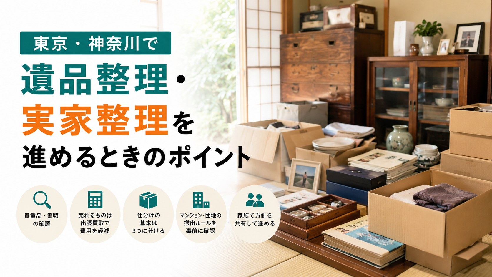
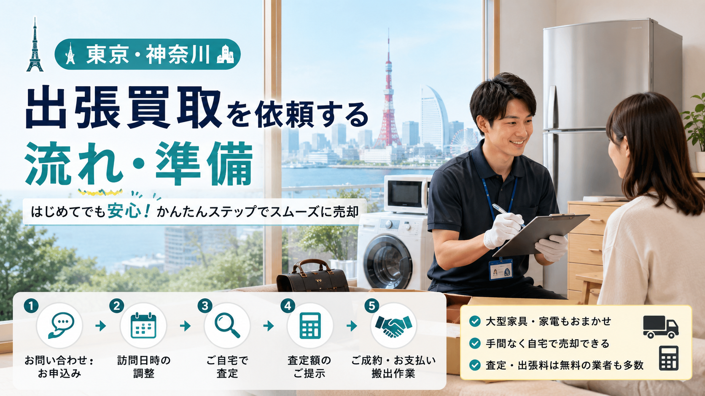
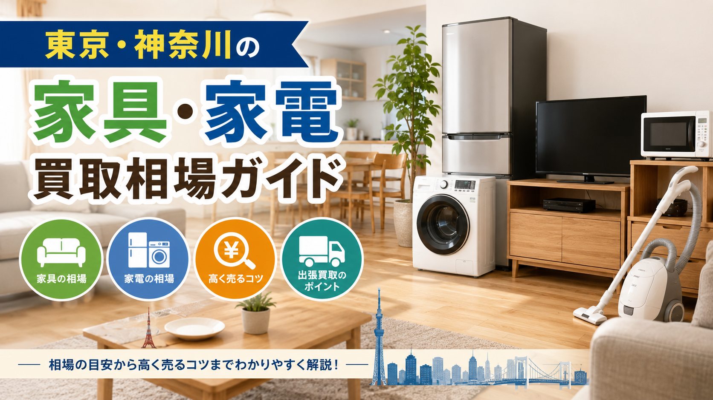
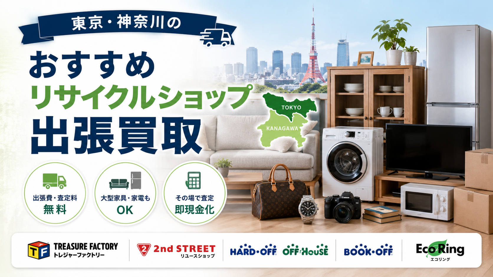

無料相談 10:00-20:00 年中無休
LINE・WEB受付
LINE査定
東京・神奈川エリア対応で、東京・神奈川の皆様に最短即日のおもてなし対応。
家財一式・遺品整理・店舗閉店まで、出張査定〜搬出までワンストップ。
「お家のお片付け、うちにまかしとき」が私たちのモットーです。
— SERVICE LINEUP —
東京・神奈川の住宅事情・商店街文化を熟知したスタッフが、お家・店舗まるごとを一括でお引き受けします。
処分と買取を1社で完結するから、お客様の手取りが伸びる仕組みです。
▶ お引越し・住替えのご家庭に
ワンルームから戸建てまで、家の中身を一気に査定。買取と処分を相殺し、最終的な支払いを最小化または「+収益」に。
▶ ご家族のお気持ちにそっと寄り添う
遺品整理士同行・女性スタッフ対応可能。貴重品の捜索、思い出の品の仕分け、お仏壇のご供養まで。立会いなしでもLINE報告で安心。
▶ 飲食・物販・サロンのオーナー様へ
東京・神奈川の繁華街・商店街で多数の閉店事例。厨房機器・什器・在庫・看板まで一括対応。明け渡し期日が迫っても最短2日で完全撤去。
— OUR PROMISE —
他社さんとはひと味違う、本社ならではのこだわりがあります。
運び出し・処分・買取をワンパッケージで請負。お客様の最終手取りが大きくなります。
他店さんの見積書を見せてもらえれば、必ず上回る金額をご提案。「一番高く」がお約束です。
遺品整理士・女性スタッフ・古物商免許保有。ご家族のお気持ちに配慮した、温かい接客を心がけております。
東京都・神奈川県横浜市に専属チームを常駐。朝のご相談で当日中の出張査定が可能です。
— FLOW —
本社のスタッフが、ご相談から搬出までスムーズに進めます。
LINEまたはWEBフォームから24時間OK。写真があればすぐ概算がお出しできます。
ご都合の日時にお伺いし、目の前でじっくり査定。出張費・キャンセル料は0円です。
その場で現金または翌営業日までに振込でお支払い。明朗会計です。
養生付きで搬出し、お部屋・店舗もきれいにしてお返し。お見送りまで丁寧に。
— REAL CASES —
東京・神奈川で実際にお取引きさせていただいた事例の一部です。
— AREA —
東京23区・多摩16市／神奈川全域（横浜18区・川崎7区・主要16都市）に最短即日でお伺いします。
エリア外もまずはご相談ください。
▶ 対応エリア詳細ページを見る
— CUSTOMER VOICE —
東京・神奈川の皆様からいただいたお声をご紹介します。
父が亡くなって、江東区の実家を片付けることになりました。リタウンさんは話を最後まで聞いてくださって、押入れの古い茶碗まで丁寧に値段をつけてくれました。お仏壇のご供養まで段取りしてくださって、本当にありがとうございました。
関内で居酒屋を15年やってましたが、コロナで閉めることに。他社さんも見積もり取りましたが、リタウンさんが一番丁寧に対応してくれて、金額も一番高かったです。原状回復業者まで紹介してもらえて助かりました。
急に転勤が決まって、多摩のマンションを一気に片付けてもらいました。半日で家電も家具も全部引き取ってもらえて、買取額で引越し費用がほぼ賄えて大満足。スタッフの方の対応も丁寧で気持ちよかったです。
— PROMISE —
ご相談から搬出まで、追加請求は一切ありません。
東京・神奈川エリア出張は完全無料。お見積もりに費用はかかりません。
金額にご納得いただけなくてもキャンセル費用は一切なし。
他店見積書ご持参で必ず上回る金額をご提示します。
見積もり後の追加費用はゼロ。明朗会計をお約束します。
— FAQ —
ここにない質問もお気軽にどうぞ。
— GUIDE —
業者選びにお悩みの方へ。東京・神奈川エリアで利用できるリサイクルショップ・出張買取業者を比較解説しています。
東京・神奈川エリアのおすすめリサイクルショップ・出張買取業者を厳選してご紹介。業者選びのポイント、品目別おすすめショップなど、出張買取をご検討の方に役立つ情報をまとめています。
— LATEST GUIDE —
東京・神奈川エリアの出張買取・リサイクルショップ・遺品整理に関するお役立ち記事をお届けします。

遺品整理・実家整理重要書類・貴重品の確認、家族での方針決め、買取できる物の仕分け、思い出の品の扱い、遠方からの整理、空き家対策、業者選びまで、無理なく進めるための手順を解説。
続きを読む →
出張買取の流れ申込から査定・搬出までの基本的な流れと、家電の年式確認、型番メモ、写真撮影、付属品、搬出経路、本人確認書類まで、初めての方も安心して依頼できる準備リストを掲載。
続きを読む →
買取相場冷蔵庫・洗濯機・テレビ・電子レンジ・エアコン・ソファ・ダイニング・ベッド・食器棚など、主要品目別の買取相場目安と査定で見られるポイントを解説。
続きを読む →
大手チェーン比較東京23区・神奈川全域で利用しやすい大手リサイクルショップを目的別に比較。家具・家電・ブランド品・楽器・ホビーまで、売りたい品目別の選び方を解説します。
続きを読む →出張査定・キャンセル料はゼロ円。LINEなら写真送るだけで仮査定OK。
「これ売れる？」「こんな状態でも大丈夫？」だけのご相談も大歓迎です。